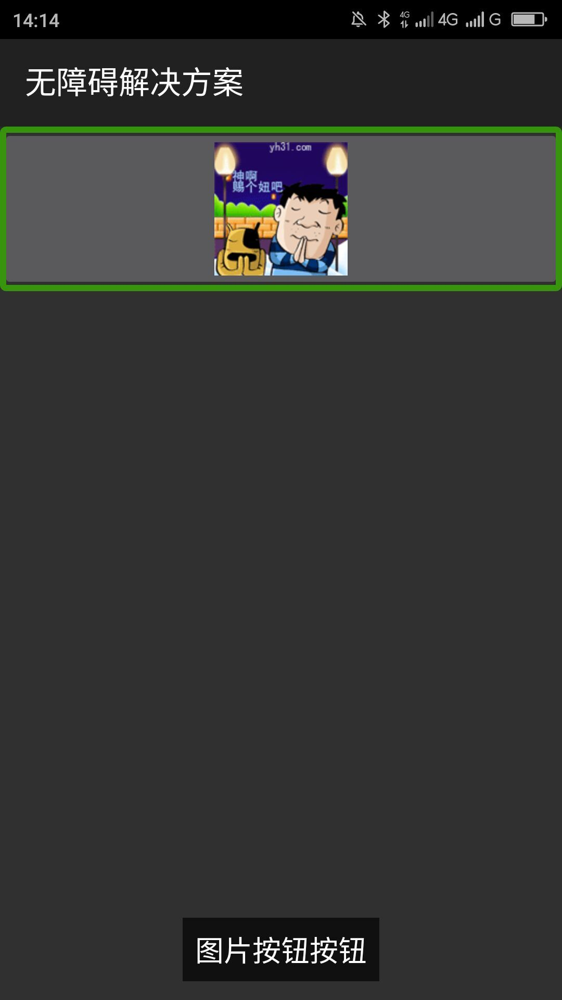
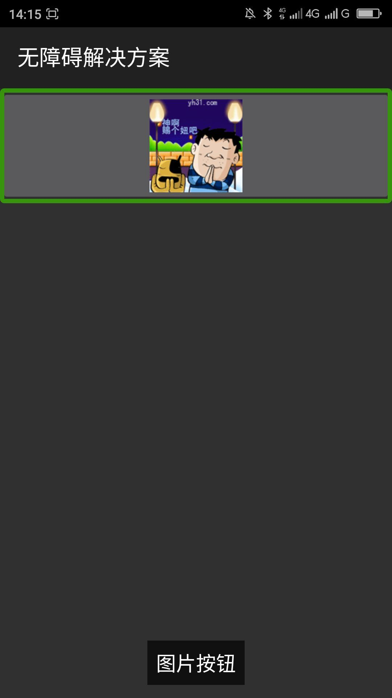

去掉替代文本中的控件类型提示____20160423
【问题描述】
在替代文本中添加了控件类型，控件类型会被朗读两遍，因为标准控件、实现了无障碍的自定义控件屏幕阅读器会自动识别控件类型。一般情况下屏幕阅读器先朗读替代文本，然后朗读屏幕阅读器识别到的控件类型，如果在替代文本中添加控件类型，控件类型就会被朗读两遍，给用户带来很不好的体验。
【问题解决方案描述】
在替代文本中只添加对此控件的目的、功能等描述文本，不要在替代文本之中添加控件类型。
【前后效果图对比】
|  |  |
| 优化前，屏幕阅读器朗读“图片按钮按钮” | 优化后，屏幕阅读器朗读“图片按钮” |